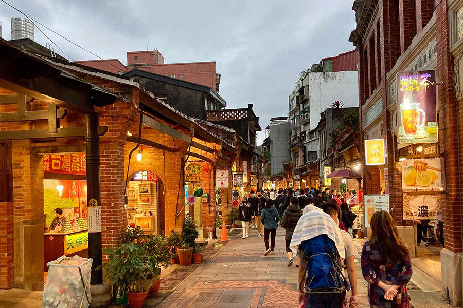
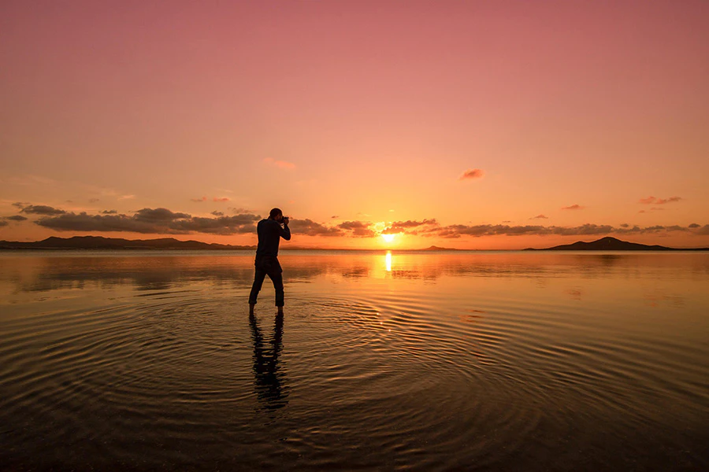
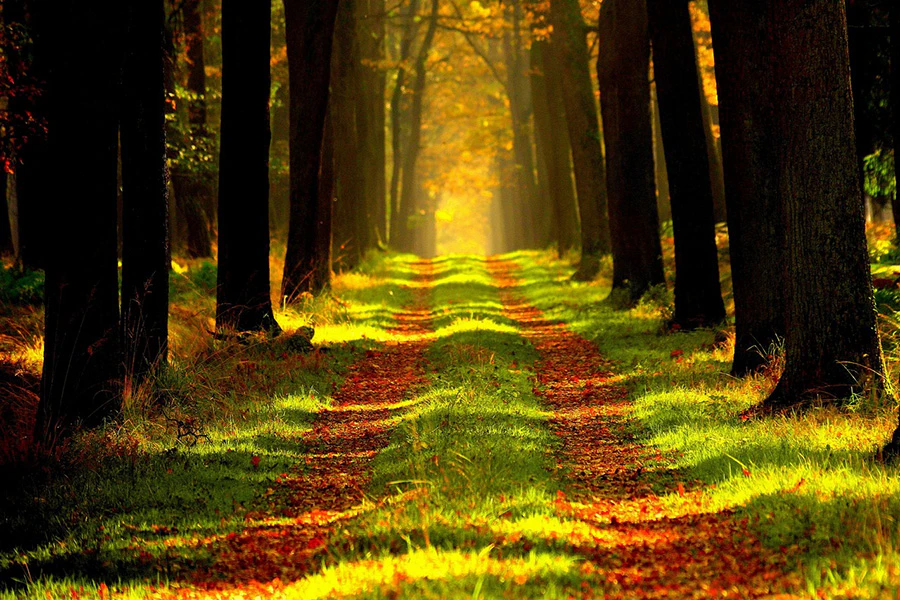
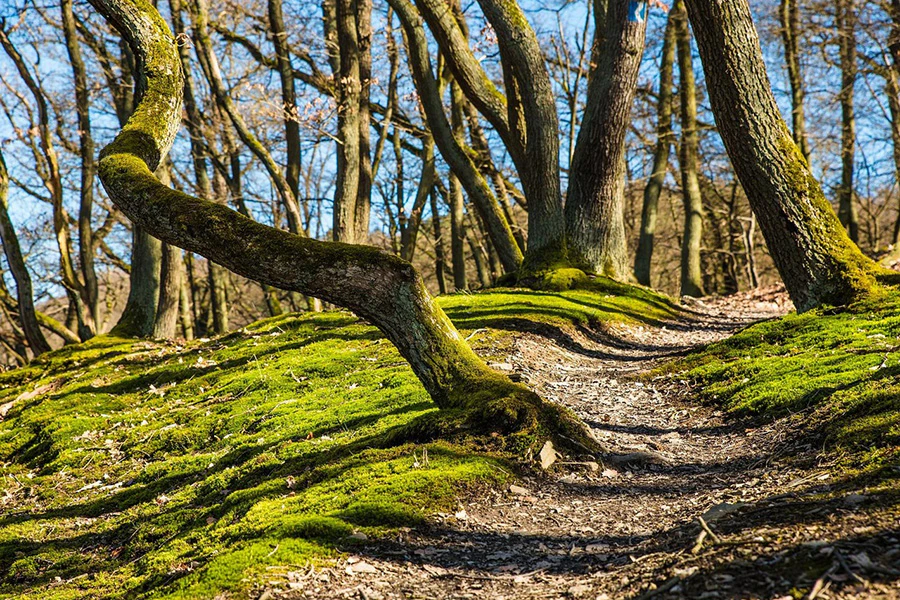

台中景點

后豐鐵馬道與東豐自行車綠廊
景點特色：利用舊山線鐵道與廢棄鐵路改建而成的專用自行車道，橫跨大甲溪花梁鋼橋、穿越九號隧道，沿途綠樹成蔭、風景秀麗，是全台最經典的鐵道自行車綠廊之一。
低碳玩法：搭乘台鐵至「后里火車站」或「豐原火車站」，出站即可租借普通自行車或電動輔助自行車，沿途享受零碳排放的綠色騎行與森林芬多精。

武陵農場與雪霸國家公園步道
景點特色：位於高海拔高山谷地，擁有極為豐富的高山自然生態、四季花卉（春櫻、秋楓）與七家灣溪國寶魚「櫻花鉤吻鮭」棲地生態中心。
低碳玩法：為減少高山私人運具碳排放，可搭乘「國光客運賞花專車」或「豐原客運（865路）低碳公車」直達，配合徒步慢遊園區步道，體驗高山無痕低碳輕旅行。
彰化景點

鹿港老街與歷史古蹟群
景點特色：鹿港為台灣清代重要商港，保存了極為完整的紅磚巷弄、閩南式傳統建築與國定古蹟（如鹿港龍山寺、鹿港天后宮）。
低碳玩法：搭乘台灣好行鹿港祈福線抵達後，可全程租借 YouBike 或徒步漫遊於摸乳巷、九曲巷與桂花巷藝術村，穿梭於傳統工藝與在地美食之間，體驗零碳排放的文化巡禮。

芳苑潮間帶海牛採蚵與濕地步道
景點特色：擁有全台獨一無二的「海牛採蚵」無形文化資產，結合芳苑濕地紅樹林海空步道，是觀察招潮蟹、彈塗魚及鳥類生態的絕佳場所。
低碳玩法：透過大眾運輸串聯在地生態導覽，漫步於延伸至大海方向的海空步道，在不破搭乘大眾運輸漫遊彰化，開啟低碳永續輕旅行！首站前往鹿港老街古蹟群，搭乘台灣好行抵達後，騎乘 YouBike 穿梭紅磚巷弄與天后宮，輕鬆品味文化工藝；次站來到八卦山大佛風景區，從彰化火車站漫步至天空步道，於樹冠層間享受森林芬多精與城市全景；最後深入芳苑潮間帶海空步道，走在延伸入海的木棧道上觀察紅樹林生態與招潮蟹，體會全台唯一的傳統海牛採蚵文化。全程善用單車與徒步，自備環保杯餐具，用最輕盈的腳步降低碳足跡，享受最道地的在地風味！ 壞海岸環境的前提下，感受自然潮汐變化與傳統永續漁業的文化智慧
南投景點
日月潭國家風景區與環湖自行車道
景點特色：台灣最大的天然湖泊，以雙潭交織的湖光山色聞名。其環湖自行車道曾獲選為全球十大最美自行車道之一，沿途串聯水社、向山遊客中心與伊達邵纜車站。
低碳玩法：搭乘「台灣好行日月潭線」抵達水社後，可租借自行車或電輔車漫遊水上步道，或搭乘零污染的「電動遊艇」環湖，實現全低碳水陸雙遊。

溪頭自然教育園區
景點特色：位於海拔約 1,150 公尺的山谷中，擁有廣闊的柳杉林、大學池、空中走廊及豐富的鳥類與森林生態，是全台著名的避暑與森林浴勝地。
低碳玩法：搭乘「台灣好行溪頭線」直達園區入口，園區內全程以徒步方式穿梭於森林步道與樹冠層空中走廊，吸納豐富芬多精，體驗深度無痕山林旅行。https://reurl.cc/lnblZY
嘉義景點

阿里山國家森林遊樂區與林業鐵路
阿里山國家森林遊樂區與林業鐵路阿里山國家森林遊樂區與林業鐵路
低碳玩法：從嘉義火車站搭乘百年歷史的「阿里山林業鐵路」或「台灣好行阿里山線」公車上山，園區內全程利用電動遊園車或徒步走在巨木群棧道，感受清爽芬多精與零碳森林浴。
故宮南院與水雲光洲園區
景點特色：結合東方文化藝術展覽與廣達 70 公頃的亞洲園區，擁有親水景觀橋、人工湖與綠意盎然的生態漫步空間。
低碳玩法：從高鐵嘉義站出站後，可騎乘 YouBike 或搭乘低碳接駁公車直達。園區內禁止燃油車輛進入，適合騎單車或散步悠遊，享受兼具文化與永續的休閒時光。